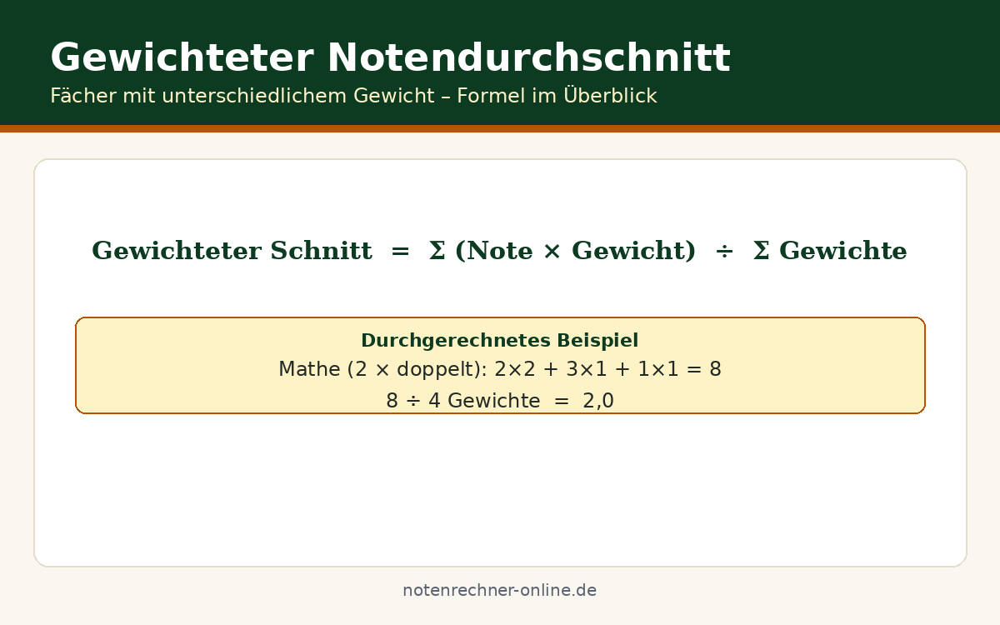

Notenschnitt gewichtet berechnen – Formel & Beispiele
Nicht jede Note zählt gleich viel: Die große Mathe-Klausur geht doppelt in die Zeugnisnote ein, die mündliche Mitarbeit nur einfach. Wer wissen will, wo er wirklich steht, kommt mit einem simplen Mittelwert nicht weit. Wir von Notenrechner Online betreiben kostenlose Online-Rechner für Notendurchschnitte aller Art – und erklären hier, wie Sie Ihren Notenschnitt gewichtet berechnen.
Die Formel für den gewichteten Notendurchschnitt
Die Idee ist denkbar einfach: Jede Note wird mit ihrem Gewicht multipliziert, alle Ergebnisse werden addiert und die Summe durch die Summe aller Gewichte geteilt. So erhält die wichtige Klausur automatisch mehr Einfluss als die kleine Hausaufgabe. In unserem Rechner zum Notenschnitt gewichtet berechnen läuft das vollautomatisch ab.
Durchgerechnetes Beispiel mit Tabelle
Beispiel: Mathe 2 bei dreifacher Gewichtung, Deutsch 3 bei doppelter, Englisch 1 bei einfacher. Die Tabelle zeigt die Rechnung:
| Fach | Note | Gewichtung | Note × Gewicht |
|---|---|---|---|
| Mathe | 2 | 3 | 6 |
| Deutsch | 3 | 2 | 6 |
| Englisch | 1 | 1 | 1 |
| Summe | – | 6 | 13 |
Stolperfallen: Darauf müssen Sie achten
Wir rechnen außerdem immer mit ungerundeten Zwischenergebnissen weiter und runden erst das Endergebnis. Wer nach jedem Schritt rundet, verfälscht das Resultat – bei vielen kleinen Gewichten summieren sich die Fehler spürbar.
Kostenlose Spickzettel & Tabellen zum Download
Wir haben die wichtigsten Formeln und Tabellen für dich als kostenlose PDFs aufbereitet – ausdrucken, ins Heft kleben, fertig. Alle Downloads sind gratis und ohne Anmeldung.


Häufige Fragen zum gewichteten Notenschnitt
Was ist der Unterschied zwischen einfachem und gewichtetem Notendurchschnitt?
Beim einfachen Durchschnitt zählen alle Noten gleich stark. Beim gewichteten bekommt jede Note ein Gewicht: Klausuren zählen mehrfach, Hausaufgaben nur einfach. Das Ergebnis spiegelt die tatsächliche Bewertungsstruktur wider.
Wie rechne ich Prozent-Gewichte in Faktoren um?
Die Prozentzahl durch 100 teilen und mit dem Dezimalwert rechnen – 40 % werden zu 0,4. Oder die Verhältnisse kürzen, etwa 40 : 20 : 10 zu 4 : 2 : 1. Wichtig ist nur, dass die Verhältnisse stimmen und die Summe 100 ergibt.
Kann ich den gewichteten Schnitt auch an der Uni berechnen?
Ja, das Prinzip ist identisch: An der Uni übernehmen die ECTS-Punkte die Rolle der Gewichte – ein 9-ECTS-Modul zählt dreimal so stark wie eines mit 3 ECTS. Details finden Sie auf unserer Seite zum ECTS-Notenschnitt an der Uni.
Was mache ich, wenn mir einzelne Gewichte fehlen?
Die Lehrkraft oder die Schulordnung nennt die verbindlichen Gewichtungen. Faustregel: schriftliche Leistungen doppelt, mündliche einfach.
Jetzt Notenschnitt gewichtet berechnen
Unser kostenloser Rechner übernimmt die Rechnung – einfach Noten und Gewichte eintragen. Alle Rechner finden sich auf https://notenrechner-online.de/.
Zum Notenschnitt-Rechner